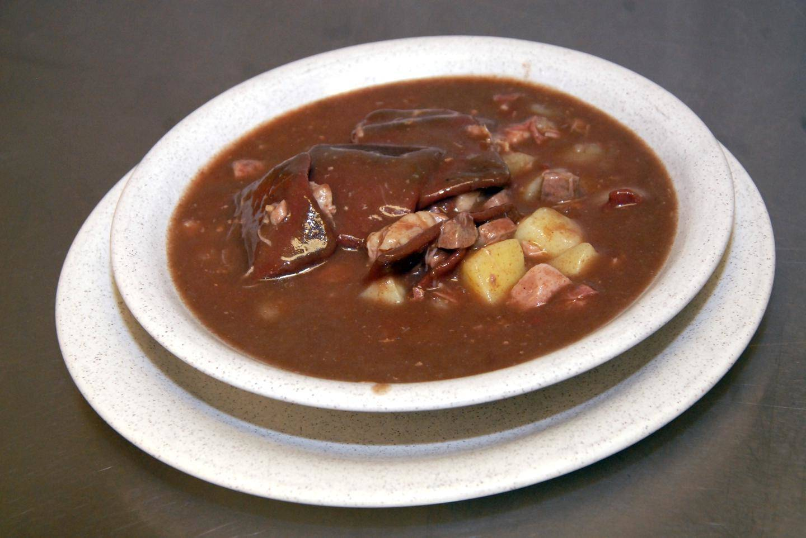

Back to Recipes
Mykyrokka

Description
Mykyrokka is a soup that is a typical traditional dish in eastern Finland (Savo region). The main ingredient is myky: a palm sized dumpling made from blood and barley flour. The dumplings are cooked in the soup. The soup also contains potatoes, onions, fatty meat, and offal such as kidneys, liver and or heart. Salt and black pepper are the usual seasonings.
This soup is also called tappaiskeitto (i.e., "butchery soup") referring to an old farm custom of autumn butchery when some animals were butchered and the meat and organs were made into sausages, hams, and other meats, and what remained was put into the soup.
Ingredients
- 0,5 l blood
- 4-5 dl barley flour
- 1 onion
- 10 big potatoes
- 1,6 kg Karelian Roast meat
- 0,7 kg liver
- 2 pig hearts
- 2 kidneys
- 1 dl beer
- 30-40 g salt
- 1-2 bags of whole peppers
- 4,5 l water
Steps
- Start about three hours before preparing the rest of the soup by boiling the chopped kidneys twice in plenty of water and then leaving them to soak for at least a couple of hours. Boil the chopped liver once in plenty of water and skim off the scum from the surface plus rinse.
- Boil 4.5 liters of water and the potato cubes in a 10 liter pot (because these ingredients make about 8 liters of soup). Add 4 teaspoons of salt to the water.
- Make a soft dough with a mixture of blood and beer, to which you mix 4-5 dl of barley flour. Let the dough rise for an hour and mix in finely chopped onion plus 1-2 teaspoons of salt if you wish. Dip two spoons in the soup broth and use them to form blood clots, plus slide them along the edge of the pot into the pot, not on top of each other, because then they will weld together into lumps. Sari, who made a similar recipe, can be seen putting the soft dough to rest in the fridge overnight and browning the onions first - it might be a good idea, because the dough that has rested for a short time is difficult to work with... Many people only add the soft dough to the roka last, unless they are made from rye flour.
- You can also completely skip this step of making the meatballs if you simply buy a package of blood leeks from the store and put them in the pot. At the end of the recipe, there are instructions for making old-fashioned and "just right" myky.
- Add the pre-processed kidneys and liver as well as hearts and Karelian roast meats to the pot. Put plenty of whole peppers (1-2 bags). When the soup has boiled for more than an hour and you have skimmed off the scum, taste the soup and add salt if necessary.